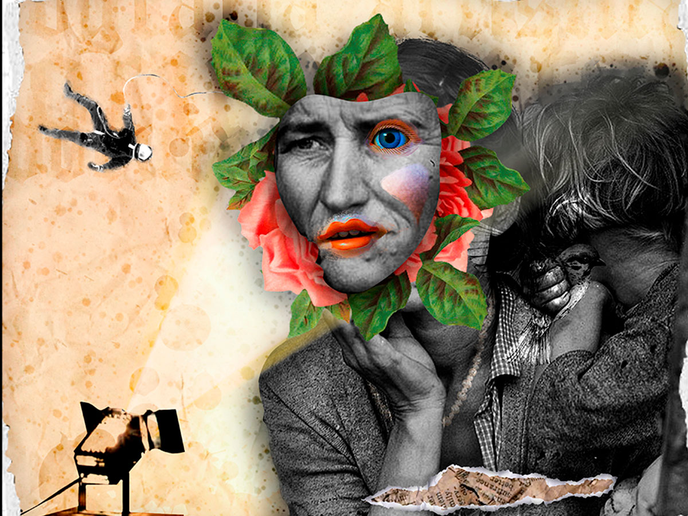

Fotomontaje
"Superposición de imágenes enmarcadas en movimientos fotográficos"
Los orígenes del fotomontaje se remontan al movimiento Dadá, que se crea en Zúrich en 1916 y se extiende por Francia y Alemania. Raoul Hausmann, en la velada de 1918 en Berlín, abogó por la inclusión de nuevos materiales en los ámbitos pictórico y escultórico, como el empleo de los fotomontajes. John Heartfield es uno de los destacados representantes de este movimiento, tanto por su producción como por la crítica a las injusticias sociales y políticas del gobierno alemán, contra el nazismo y el III Reich. También se destaca Hannah Höch, quien hizo su primer fotomontaje en 1918.
La propuesta a los estudiantes fue el abordaje de los movimientos y corrientes artísticas y documentales del siglo XX, a partir de la revisión de autores y obras.

CARLOS LUNA
DANIELA PINTO
GEHARD
LINA SANTAMARIA
LORENA

OSCAR CASTIBLANCO